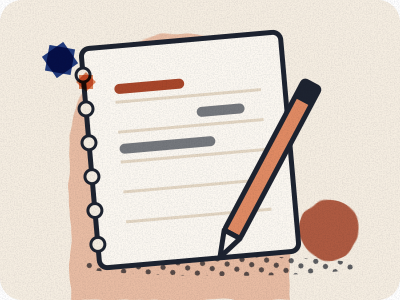

Who writes
this site.
Morocco, Clearly is a free guide for a first visit. Omar Oujoud writes it from Casablanca.

What you are reading
Each practical guide answers one question: how to get somewhere, what a ticket costs, or what to do when the usual plan breaks. A price, a time or a rule carries a badge. The badge names the kind of source and the day that page was read. A paragraph marked “Our advice” is a judgement, not a measurement.
Nothing here is marked as seen on a visit. When a page does not have a figure, it says so.
Who is responsible
Omar Oujoud writes and edits the site. Research drafting is AI-assisted. The fare log is for prices written down on a stated day. It has no entries yet.
Corrections
There is no public inbox on this site, and this page does not ask you to send one. If a detail matters for your trip, open the operator or authority page linked from the guide. The contact page says what the site does and does not collect. The privacy page covers the calculators and hosting.
No bookings
The site does not sell trips, take a commission or rank a business. Read the commercial disclosures.
How a badge is chosen →